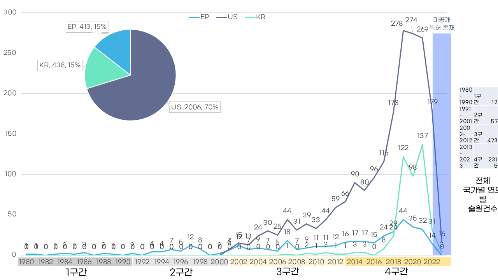
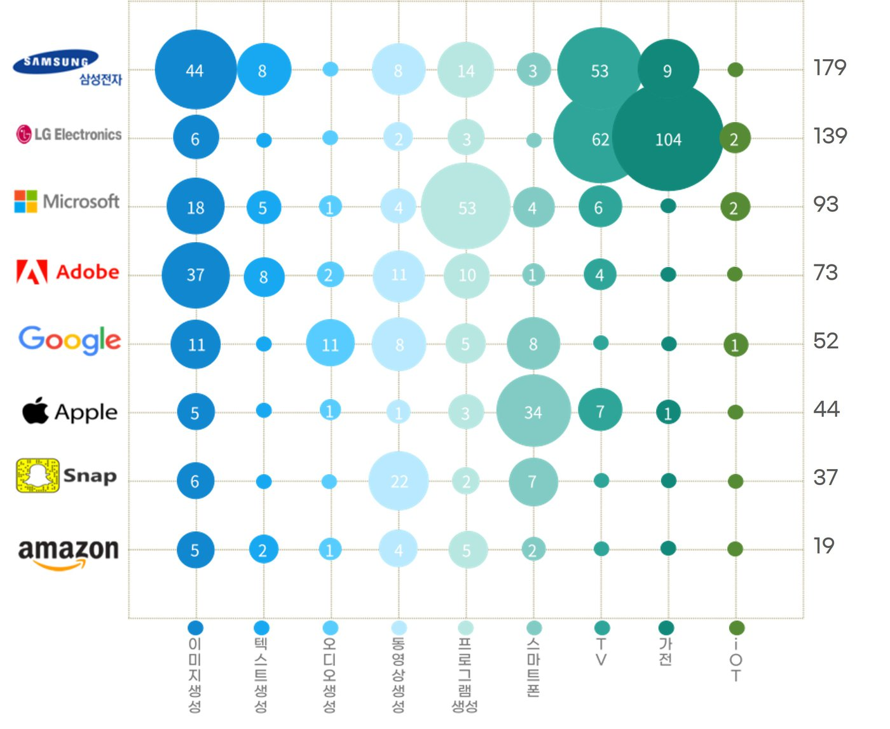
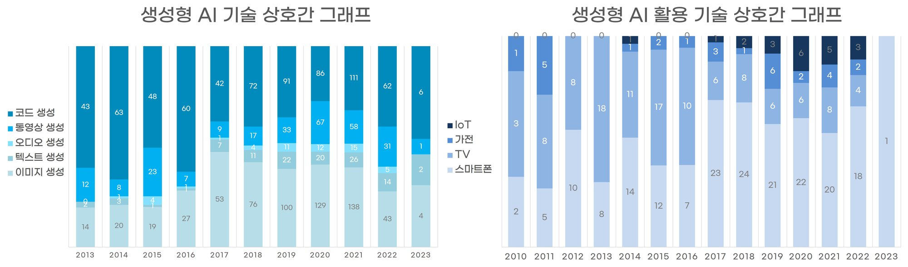

- 문제
- 생성형 AI에 대한 관심은 커지고 있지만, 스마트폰·TV·가전·IoT 같은 전자기기에 어떤 생성형 기술이 어떻게 접목되고 있는지 정리된 근거가 부족했습니다.
- 내 역할
- 제1저자. 기술분류 체계와 검색식 수립, 유효특허 선정 기준 설계, 정량·정성 분석과 시각화, 논문 작성을 맡았습니다.
- 핵심 결과
- 출원은 2014년 이후 늘기 시작해 2018년 이후 급증했고, 미국이 유효특허의 70%를 차지했습니다. 반면 상위 출원인은 삼성전자와 LG전자로, 가장 큰 시장과 상위 출원인의 국적이 달랐습니다. 스마트폰 핵심 특허는 아바타·이모지 생성, TV 핵심 특허는 초해상도 동영상 생성에 모여 있었습니다.

What problem did I solve?
1. Background
ChatGPT 출시 이후 빅테크를 중심으로 생성형 AI 모델 개발 경쟁이 본격화되었습니다. 기존 동향 연구는 생성형 AI 기술 전반이나 스타트업 활동을 다뤘지만, 전자기기에 실제로 어떤 생성형 기술이 접목되고 있는지를 기업이 출원한 특허로 살펴본 연구는 많지 않았습니다.
Objective
특허 데이터로 생성형 AI가 접목된 기술의 동향을 파악하고, 스마트폰·TV·가전·IoT 각 분야로의 융합 가능성을 분석합니다.
How did I solve it?
2. Data
- 범위: 한국·미국·유럽 특허, 1980.01 – 2023.08 공개분
- 유효특허: 총 2,919건
3. Method
기술분류 체계
생성형 AI 기술 자체(기술분류 1)와 전자기기에 접목된 생성형 AI 활용 기술(기술분류 2)을 나누고, 대분류별 주요 모델 키워드로 검색식을 만들었습니다.
| 구분 | 대분류 | 예시 중분류 |
|---|---|---|
| 기술분류 1: 생성형 AI 기술 | 이미지 · 텍스트 · 오디오 · 동영상 · 코드 생성 | 객체 생성/삭제, 문장/문서 요약 및 번역, 음악/음성 변형 |
| 기술분류 2: 생성형 AI 활용 기술 | 스마트폰 · TV · 가전 · IoT | 아바타/이모지 생성, 초해상도 동영상 생성, 로봇 청소기 코드 생성 |
유효특허 선정 기준
- 대용량 데이터로 학습한 딥러닝 모델이 입력을 새로운 출력으로 생성하는 기술일 것
- 생성형 AI가 비교적 최근 기술임을 고려해, 원천이 되는 이전 기술도 일부 포함
| 기술분류 1 | US | EP | KR | Total |
|---|---|---|---|---|
| 이미지 생성 | 441 | 113 | 189 | 743 |
| 텍스트 생성 | 102 | 6 | 14 | 122 |
| 오디오 생성 | 44 | 6 | 19 | 69 |
| 동영상 생성 | 214 | 55 | 43 | 312 |
| 코드 생성 | 742 | 190 | 50 | 982 |
| 기술분류 2 | US | EP | KR | Total |
|---|---|---|---|---|
| 스마트폰 | 173 | 24 | 22 | 219 |
| TV | 291 | 36 | 67 | 394 |
| 가전 | 27 | 24 | 3 | 54 |
| IoT | 13 | 3 | 8 | 24 |
분석은 정량분석(연도·국가·출원인), 기술 상호간 분석(대분류별 비중 변화), 정성분석(피인용·패밀리·비특허 인용 상위 특허 중 핵심특허 선정) 순서로 진행했습니다.
What were the results?
4. Results
- Finding 1: 2014년 이후 출원이 늘기 시작해 2018년 이후 급증했습니다. 2022년 이후의 감소는 18개월 미공개 기간 때문으로, 실제 감소로 해석하지 않았습니다.
- Finding 2: 미국이 유효특허의 70%를 차지했지만, 상위 출원인은 삼성전자와 LG전자였습니다. 삼성전자는 여러 대분류에 고르게, LG전자는 TV와 가전에 집중해 출원했습니다.
- Finding 3: 기술분류 1 전체로는 코드 생성 특허가 가장 많았지만, 2017년부터는 연도별 이미지 생성 출원이 코드 생성을 앞섰습니다. 기술분류 2에서는 TV 특허가 많았지만 2017년 이후 스마트폰 출원이 TV를 넘어섰습니다.
- Finding 4: 스마트폰 핵심 특허는 모두 아바타·이모지 생성(Adidas 2006, Apple 2017·2018), TV 핵심 특허는 모두 초해상도 동영상 생성(Amazon 2017, Disney 2018, Samsung 2021)에 해당했습니다.

Fig 2. 국가별 연도에 따른 생성형 AI 기술 특허 출원건수

Fig 3. 상위 출원인의 대분류에 따른 출원건수 비교

Fig 4–5. 기술분류 1(왼쪽)과 기술분류 2(오른쪽) 대분류별 연도별 비중
5. Discussion & Limitation
Discussion
- 가장 큰 시장(미국)과 상위 출원인의 국적(한국)이 달랐습니다.
- 같은 국내 기업이라도 삼성전자와 LG전자의 출원 방향이 뚜렷하게 달랐습니다.
Limitation
- 특허 공개까지 18개월이 걸려, 2022년 이후 출원은 실제보다 적게 집계되었습니다.
- 정성분석은 출원 비중이 가장 큰 스마트폰과 TV에만 수행했습니다.
What was my contribution?
First Author
- 기술분류 체계와 검색식 수립
- 유효특허 선정 기준 설계
- 정량·기술 상호간·정성 분석
- 시각화와 논문 작성